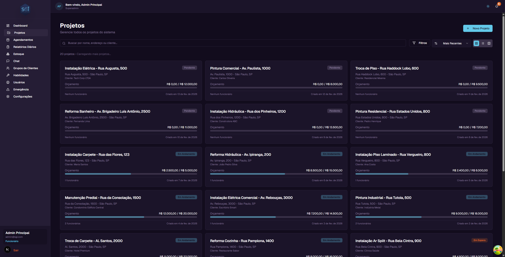
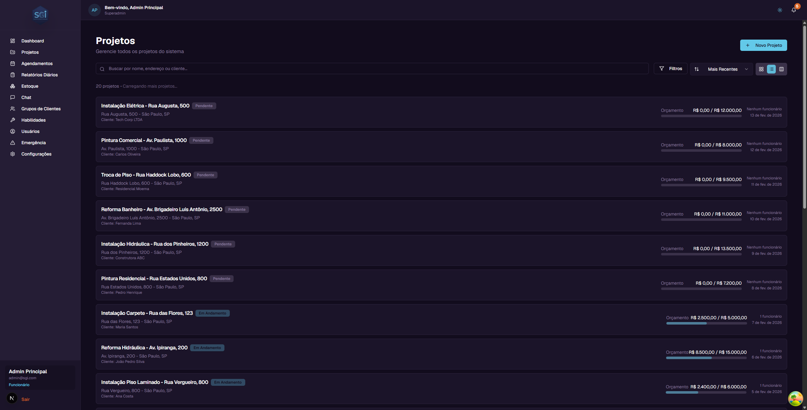
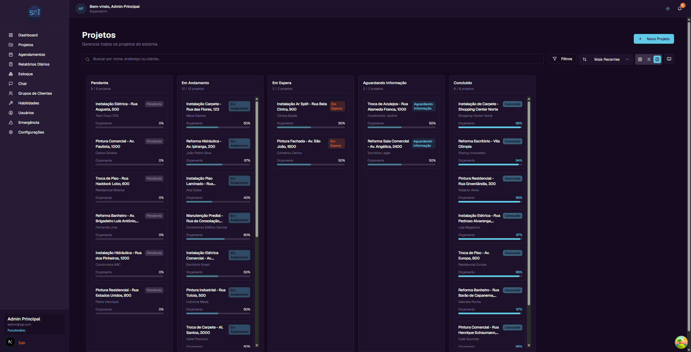
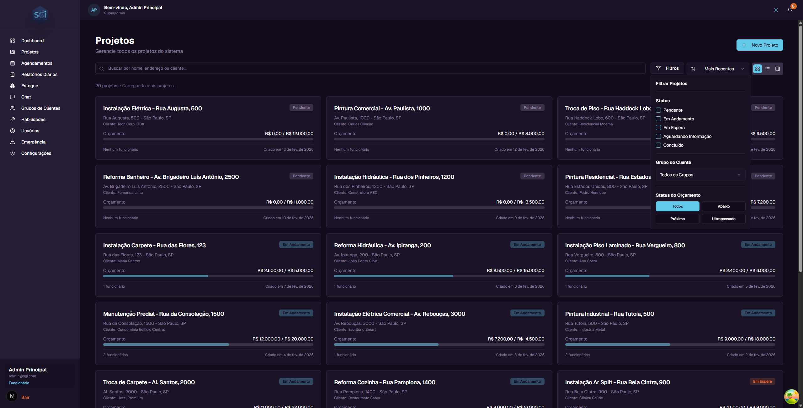
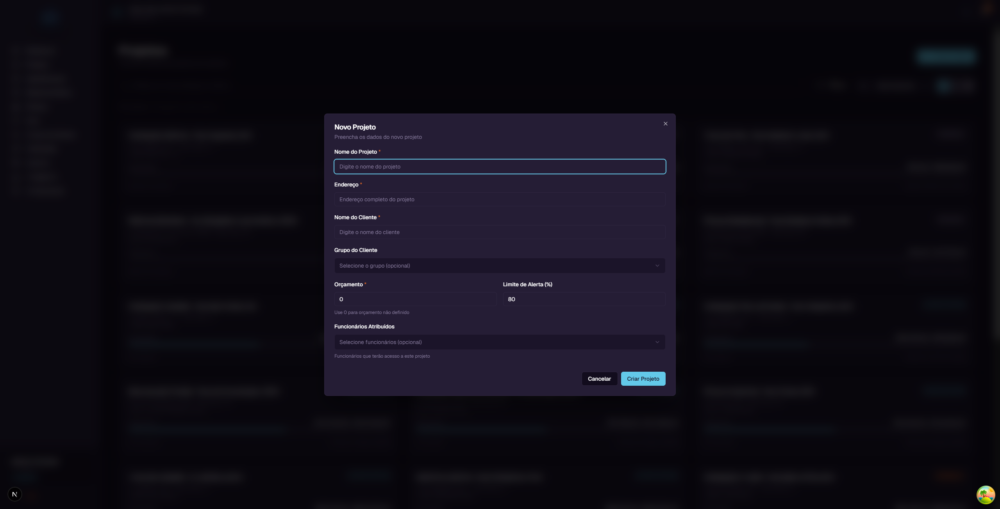
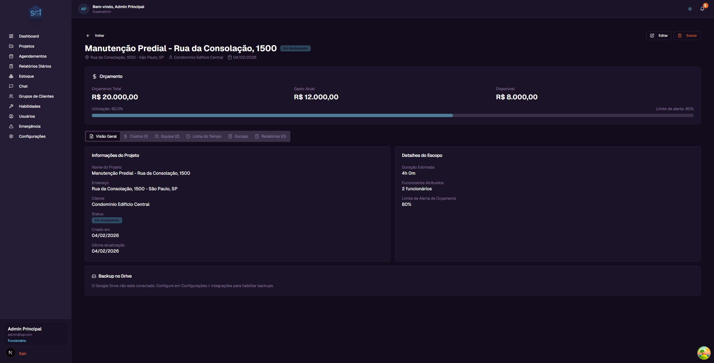
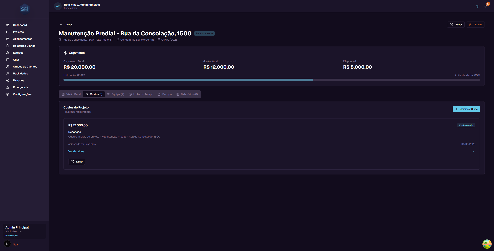
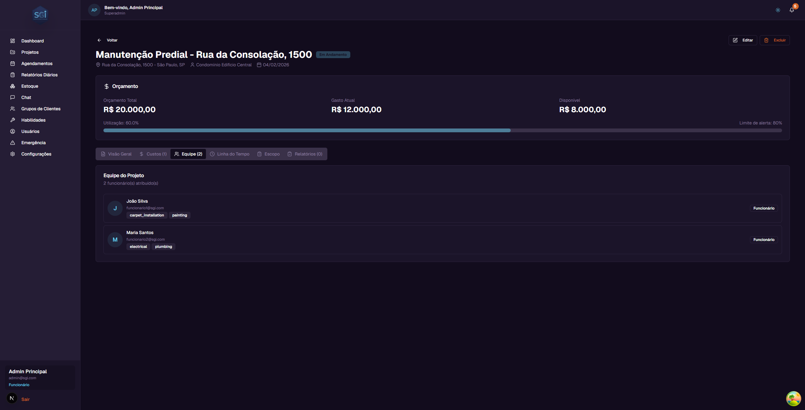
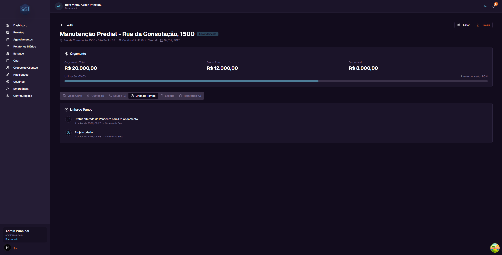
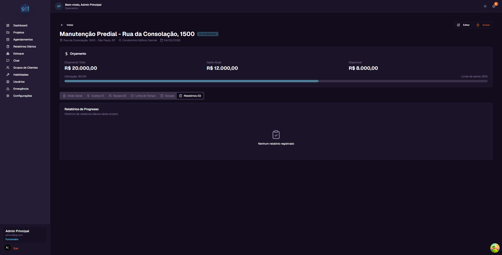

Projetos - Guia do Usuario¶
Neste guia, voce vai aprender tudo sobre a tela de Projetos do SGI. Aqui e onde voce visualiza, cria, edita e acompanha todos os projetos da empresa.
1. Acessando a tela de Projetos¶
No menu lateral esquerdo, clique em "Projetos". Voce sera levado para a lista com todos os projetos do sistema.

2. Entendendo o card do projeto¶
Cada projeto aparece como um card com as seguintes informacoes:
- Nome do projeto - Exemplo: "Instalacao Eletrica - Rua Augusta, 500"
- Status - Uma etiqueta colorida indicando a situacao atual (Pendente, Em Andamento, etc.)
- Endereco - Onde o servico sera realizado
- Cliente - Nome do cliente responsavel
- Orcamento - Quanto ja foi gasto e o orcamento total (ex: R$ 2.500,00 / R$ 5.000,00)
- Barra de progresso - Mostra visualmente quanto do orcamento ja foi utilizado
- Funcionarios - Quantos funcionarios estao atribuidos ao projeto
- Data de criacao - Quando o projeto foi criado
3. Modos de visualizacao¶
Voce pode ver os projetos de 3 formas diferentes. Os botoes ficam no canto superior direito da tela.
Grade (padrao)¶
Mostra os projetos em cards organizados em 3 colunas. E a visualizacao padrao e permite ver varios projetos de uma vez.
Lista¶
Mostra os projetos um abaixo do outro, em linhas horizontais. Util para quando voce quer ver mais projetos na tela sem muitos detalhes visuais.

Kanban¶
Organiza os projetos em colunas por status. Cada coluna representa um status diferente:
- Pendente - Projetos prontos para comecar
- Em Andamento - Projetos com trabalho em progresso
- Em Espera - Projetos pausados temporariamente
- Aguardando Informacao - Projetos esperando dados do cliente ou de outra pessoa
- Concluido - Projetos finalizados
No Kanban, voce pode arrastar e soltar um projeto de uma coluna para outra para mudar o status dele. Se voce errar, use Ctrl+Z para desfazer.

4. Buscando projetos¶
No topo da pagina, existe um campo de busca com o texto "Buscar por nome, endereco ou cliente...".
Basta digitar parte do nome do projeto, do endereco ou do nome do cliente. A lista sera filtrada automaticamente conforme voce digita.
Exemplo: Se voce digitar "Pintura", todos os projetos que contenham "Pintura" no nome vao aparecer.
5. Filtrando projetos¶
Clique no botao "Filtros" para abrir o painel de filtros avancados.

Os filtros disponiveis sao:
Status¶
Marque os status que voce quer ver. Voce pode selecionar mais de um ao mesmo tempo: - Pendente - Em Andamento - Em Espera - Aguardando Informacao - Concluido
Grupo do Cliente¶
Filtre por grupo de clientes (se voce tiver grupos cadastrados). Selecione "Todos os Grupos" para ver todos.
Status do Orcamento¶
Filtre pelo estado financeiro do projeto: - Todos - Mostra todos os projetos - Abaixo - Projetos com gastos abaixo do limite de alerta - Proximo - Projetos com gastos perto do limite de alerta - Ultrapassado - Projetos que ja gastaram mais do que o orcamento total
6. Ordenando projetos¶
Ao lado do botao de filtros, existe um seletor de ordenacao. Clique nele para escolher como os projetos sao ordenados:
- Mais Recentes - Projetos criados mais recentemente primeiro (padrao)
- Mais Antigos - Projetos criados ha mais tempo primeiro
- Nome (A-Z) - Ordem alfabetica
- Nome (Z-A) - Ordem alfabetica inversa
- Maior Orcamento - Projetos com maior orcamento primeiro
- Menor Orcamento - Projetos com menor orcamento primeiro
7. Criando um novo projeto¶
Para criar um projeto, clique no botao "+ Novo Projeto" no canto superior direito.

Uma janela vai abrir com os seguintes campos:
| Campo | Obrigatorio? | Descricao |
|---|---|---|
| Nome do Projeto | Sim | O nome que identifica o projeto. Ex: "Pintura Residencial - Rua das Flores, 100" |
| Endereco | Sim | Endereco completo onde o servico sera realizado |
| Nome do Cliente | Sim | Nome do cliente que contratou o servico |
| Grupo do Cliente | Nao | Selecione um grupo para organizar seus clientes (opcional) |
| Orcamento | Sim | Valor total do orcamento. Use 0 se ainda nao foi definido |
| Limite de Alerta (%) | Nao | Porcentagem do orcamento a partir da qual voce sera alertado. Padrao: 80% |
| Funcionarios Atribuidos | Nao | Selecione quais funcionarios terao acesso a este projeto |
Exemplo passo a passo¶
Vamos criar um projeto de exemplo:
- Clique em "+ Novo Projeto"
- Em Nome do Projeto, digite:
Pintura Residencial - Rua das Flores, 100 - Em Endereco, digite:
Rua das Flores, 100 - Sao Paulo, SP - Em Nome do Cliente, digite:
Ana Silva - Em Orcamento, digite:
15000(R$ 15.000,00) - O Limite de Alerta ja vem preenchido com 80% - isso significa que quando o projeto gastar 80% do orcamento (R$ 12.000,00), voce vera um alerta
- Clique em "Criar Projeto"
O projeto sera criado com o status "Pendente" e aparecera na lista.
8. Pagina de detalhes do projeto¶
Para ver todos os detalhes de um projeto, clique no card dele na lista. Voce sera levado para a pagina de detalhes.

Cabecalho¶
No topo da pagina, voce encontra:
- Botao "Voltar" - Retorna para a lista de projetos
- Nome do projeto - O nome completo do projeto
- Status - Etiqueta colorida com o status atual
- Endereco - Endereco do projeto
- Cliente - Nome do cliente
- Data de criacao - Quando o projeto foi criado
- Botao "Editar" - Abre o formulario para editar o projeto (apenas administradores)
- Botao "Excluir" - Remove o projeto permanentemente (apenas administradores)
Painel de Orcamento¶
Logo abaixo do cabecalho, existe o painel de orcamento que mostra 3 valores importantes:
| Informacao | O que significa | Exemplo |
|---|---|---|
| Orcamento Total | O valor total definido para o projeto | R$ 20.000,00 |
| Gasto Atual | A soma de todos os custos aprovados | R$ 12.000,00 |
| Disponivel | Quanto ainda resta do orcamento (Total - Gasto Atual) | R$ 8.000,00 |
Abaixo dos valores, existe uma barra de progresso que mostra visualmente a porcentagem utilizada.
Como o sistema calcula¶
- Orcamento Total = Valor definido quando voce criou ou editou o projeto
- Gasto Atual = Soma de todos os custos que foram aprovados (custos pendentes ou rejeitados nao contam)
- Disponivel = Orcamento Total menos o Gasto Atual
- Porcentagem = (Gasto Atual / Orcamento Total) x 100
Limite de Alerta e cores¶
O Limite de Alerta e a porcentagem a partir da qual o sistema avisa que voce esta gastando muito. O padrao e 80%, mas voce pode mudar ao criar ou editar o projeto.
A barra de progresso muda de cor conforme a situacao:
| Cor da barra | Significado | Quando aparece |
|---|---|---|
| Verde/Azul | Tudo normal | Gastos abaixo do limite de alerta |
| Laranja | Atencao! Proximo do limite | Gastos entre o limite de alerta e 100% |
| Vermelho | Orcamento ultrapassado | Gastos acima de 100% do orcamento |
Exemplo: Se o orcamento e R$ 20.000,00 e o limite de alerta e 80%: - Ate R$ 16.000,00 de gastos = barra verde (normal) - De R$ 16.000,00 a R$ 20.000,00 = barra laranja (atencao) - Acima de R$ 20.000,00 = barra vermelha (ultrapassou)
9. Abas do projeto¶
A pagina de detalhes tem 6 abas. Clique em cada uma para ver informacoes diferentes.
Aba: Visao Geral¶
Mostra um resumo com duas secoes:
Informacoes do Projeto: - Nome do Projeto - Endereco - Cliente - Status atual - Data de criacao - Data da ultima atualizacao
Detalhes do Escopo: - Duracao estimada do servico (em horas e minutos) - Quantidade de funcionarios atribuidos - Limite de alerta de orcamento configurado
Aba: Custos¶
Aqui voce ve todos os custos registrados neste projeto.

O que aparece em cada custo: - Valor - Quanto custou (ex: R$ 12.000,00) - Status - Se esta Aprovado, Pendente ou Rejeitado - Descricao - O que foi o gasto - Quem adicionou - Nome do funcionario ou admin que registrou o custo - Data - Quando o custo foi registrado
Acoes disponiveis (apenas administradores): - "+ Adicionar Custo" - Registrar um novo gasto no projeto - "Editar" - Alterar os dados de um custo existente - "Ver detalhes" - Expandir para ver mais informacoes do custo
Como os custos funcionam¶
- Quando um administrador adiciona um custo, ele e aprovado automaticamente e ja conta no orcamento
- Quando um funcionario adiciona um custo (via Chat), ele fica como "Pendente" ate um administrador aprovar ou rejeitar
- Somente custos com status "Aprovado" sao somados no "Gasto Atual" do orcamento
- Custos pendentes ou rejeitados nao afetam o orcamento
flowchart TD
A[Usuario adiciona custo] --> B{Quem adicionou?}
B -->|Admin/Super Admin| C[Status: approved automatico]
B -->|Funcionario com canApproveCosts| D[Status: approved automatico]
B -->|Funcionario padrao| E[Status: pending_approval]
E --> F[Admin revisa]
F -->|Aprova| G[Status: approved]
F -->|Rejeita| H[Status: rejected]
C --> I[Contabilizado no orcamento]
D --> I
G --> I
H --> J[Nao conta no orcamento]Custos de Estoque¶
Alem de custos manuais, voce tambem pode adicionar custos a partir do Estoque do sistema. Ao retirar itens do estoque para um projeto, o valor e registrado automaticamente como custo.
Este recurso sera explicado em detalhes no Guia de Estoque.
Aba: Equipe¶
Mostra todos os funcionarios que estao atribuidos a este projeto.

O que aparece para cada funcionario: - Foto/Inicial - Uma bolinha com a inicial do nome - Nome - Nome completo do funcionario - Email - Email do funcionario - Habilidades - Tags mostrando as habilidades (ex: carpet_installation, painting, electrical) - Cargo - Se e Funcionario ou Administrador
Os funcionarios sao atribuidos ao projeto durante a criacao ou edicao do projeto.
Aba: Linha do Tempo¶
Mostra o historico de tudo que aconteceu no projeto, em ordem cronologica.

Tipos de eventos que aparecem: - Projeto criado - Quando o projeto foi criado e por quem - Status alterado - Quando o status mudou (ex: "Status alterado de Pendente para Em Andamento") - Custo aprovado - Quando um custo foi aprovado - Funcionarios atribuidos - Quando funcionarios foram adicionados ou removidos - Dados editados - Quando informacoes do projeto foram alteradas
Cada evento mostra a data, hora e quem realizou a acao.
Aba: Work Order (Escopo Profissional)¶
O escopo do projeto agora e chamado Work Order - uma ordem de servico profissional completa com header, cliente, categorias e items detalhados.

A Work Order e gerada atraves do Chat com IA (a partir de texto, foto, audio ou video) ou importada de um PDF externo. Ela contem:
- Header: numero da WO, numero do job, cliente, endereco do trabalho
- 16 categorias profissionais (Framing, Electrical, Drywall, Plumbing, etc.)
- Items detalhados com task, acao, tipo, quantidade, unidade, comodo
- Precos (visiveis apenas para administradores)
- Status formal (Draft → Ready for Review → Approved → In Progress → Completed)
- Export em PDF para envio ao cliente
📖 Consulte o Guia de Work Order para documentacao completa do sistema.
Aba: Relatorios¶
Mostra o historico de relatorios diarios de progresso do projeto.

Os relatorios sao criados pelos funcionarios atraves do Chat com IA. Nao ha botao "Criar Relatorio" nesta aba - todos os relatorios vem do Chat.
📖 Veja os guias Chat com IA e Relatorios Diarios para o fluxo completo.
Aba: Fotos do Projeto¶

A aba Fotos permite anexar imagens ao projeto (progresso do trabalho, danos, vistorias, etc.). Inclui:
- Upload de multiplas fotos (ate 50MB cada)
- Metadados: descricao, tags, data da captura
- Comentarios por foto (colaborativo)
Permissao necessaria
A aba "Fotos" so aparece para usuarios com a permissao canViewProjectPhotos. Para fazer upload/editar/deletar, precisa tambem de canEditProjectPhotos.
📖 Veja o Guia de Fotos do Projeto para instrucoes completas.
10. Editando um projeto¶
Para editar um projeto:
- Clique no projeto na lista para abrir a pagina de detalhes
- Clique no botao "Editar" no canto superior direito
- Uma janela vai abrir com os dados atuais do projeto ja preenchidos
- Altere o que for necessario (nome, endereco, cliente, orcamento, limite de alerta, funcionarios)
- Clique em "Salvar" para confirmar as alteracoes
As alteracoes serao salvas e a pagina sera atualizada automaticamente.
11. Excluindo um projeto¶
Para excluir um projeto:
- Clique no projeto na lista para abrir a pagina de detalhes
- Clique no botao "Excluir" no canto superior direito
- Uma janela de confirmacao vai aparecer mostrando os dados do projeto (nome, endereco, cliente, orcamento, gastos, status)
- Leia com atencao - esta acao e permanente e nao pode ser desfeita
- Se tiver certeza, clique no botao de confirmacao para excluir
Apos excluir, voce sera redirecionado de volta para a lista de projetos.
12. Kanban - Gerenciando status¶
O modo Kanban e ideal para gerenciar o status dos projetos de forma visual.
Como usar¶
No computador (desktop): - Arraste e solte o card de um projeto para a coluna do status desejado - Exemplo: Arraste "Instalacao Carpete" da coluna "Pendente" para "Em Andamento" - O sistema vai atualizar o status automaticamente
Desfazer: - Se voce moveu um projeto por engano, pressione Ctrl+Z (ou Cmd+Z no Mac) para desfazer - Tambem aparece um botao de "Desfazer" na notificacao que surge apos mover
O que cada coluna significa¶
| Status | Significado | Quando usar |
|---|---|---|
Pendente (pending) |
O projeto foi criado e esta pronto para comecar | Projetos novos ou aprovados |
Em Andamento (active) |
O trabalho esta sendo executado | Quando a equipe comecou o servico |
Em Espera (on_hold) |
O projeto esta pausado | Quando ha um impedimento temporario |
Aguardando Informacao (awaiting_input) |
Falta uma informacao para continuar | Quando precisa de dados do cliente ou fornecedor |
Concluido (completed) |
O projeto foi finalizado | Quando todo o servico foi entregue |
stateDiagram-v2
direction LR
[*] --> pending: Projeto criado
pending --> active: Equipe inicia trabalho
active --> on_hold: Bloqueador temporario
active --> awaiting_input: Falta info cliente
on_hold --> active: Retomar
awaiting_input --> active: Info recebida
active --> completed: Trabalho entregue
completed --> [*]Motivo obrigatorio em on_hold e awaiting_input
Quando voce muda um projeto para Em Espera ou Aguardando Informacao, o sistema abre um modal pedindo o motivo (campo statusReason, ate 500 caracteres). Sem motivo, a mudanca nao e salva.
Esse motivo aparece na Timeline do projeto e ajuda a equipe a entender por que o trabalho parou.
Mudanca de status: apenas admins
Apenas Super Admin e Admin podem mudar o status de um projeto. Funcionarios nao tem acesso ao Kanban drag-and-drop nem aos botoes de status.
Regras Importantes¶
Campos obrigatórios e limites¶
| Campo | Obrigatório | Min | Max | Observação |
|---|---|---|---|---|
projectName |
Sim | 3 chars | 100 chars | - |
address |
Sim | 5 chars | - | - |
clientName |
Sim | 3 chars | - | - |
clientGroupId |
Não | - | - | Deve existir se informado |
budget |
Sim | 0 | - | Pode ser 0 (não definido) |
budgetAlertThreshold |
Não | 0 | 1 | Padrão: 0.8 (80%) |
assignedUsers |
Não | - | - | Array vazio se nenhum |
statusReason |
Condicional | - | 500 chars | Obrigatório ao mudar para on_hold ou awaiting_input |
Permissões necessárias¶
| Operação | Super Admin | Admin | Funcionário com permissão | Funcionário padrão |
|---|---|---|---|---|
| Ver todos os projetos | Sim | Sim | canViewAllProjects |
Só atribuídos |
| Criar projeto | Sim | Sim | canCreateProjects |
Não |
| Editar projeto | Sim | Sim | canEditProjects |
Não |
| Deletar projeto | Sim | Sim | canDeleteProjects |
Não |
| Mudar status (Kanban) | Sim | Sim | Não (reservado admins) | Não |
| Adicionar custo | Sim | Sim | canAddCosts |
Não |
| Aprovar custo | Sim | Sim | canApproveCosts |
Não |
Validações que bloqueiam¶
Motivo obrigatório
Mudar projeto para on_hold ou awaiting_input sem preencher statusReason bloqueia a operação.
Deletar projeto não bloqueia
O sistema permite deletar projeto mesmo com custos, agendamentos, fotos, daily reports. Todos os dados relacionados são perdidos (cascade delete das fotos, outros ficam órfãos). Seja cuidadoso.
Defaults do sistema¶
| Configuração | Padrão |
|---|---|
| Status inicial | pending |
budgetAlertThreshold |
0.8 (80%) |
assignedUsers |
[] (vazio) |
clientGroupId |
null (sem grupo) |
| Vista inicial da lista | Grid |
| Itens por página | 20 (infinite scroll) |
| Ordenação | Mais recentes primeiro |
Resumo rapido¶
| Voce quer... | Faca isso... |
|---|---|
| Ver todos os projetos | Clique em "Projetos" no menu lateral |
| Buscar um projeto | Digite no campo de busca |
| Filtrar por status | Clique em "Filtros" e marque os status |
| Criar um projeto | Clique em "+ Novo Projeto" |
| Ver detalhes | Clique no card do projeto |
| Editar um projeto | Detalhes > botao "Editar" |
| Excluir um projeto | Detalhes > botao "Excluir" |
| Mudar status rapidamente | Use o modo Kanban e arraste o card |
| Acompanhar gastos | Detalhes > aba "Custos" |
| Ver a equipe | Detalhes > aba "Equipe" |
| Ver historico | Detalhes > aba "Linha do Tempo" |